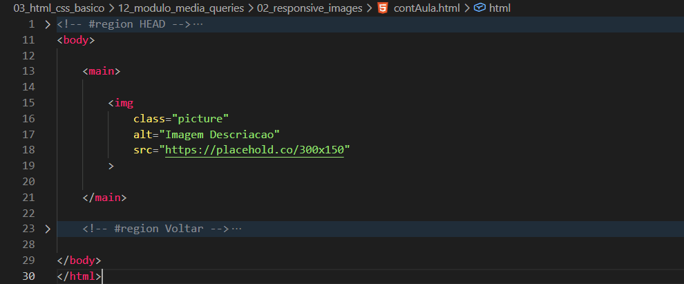
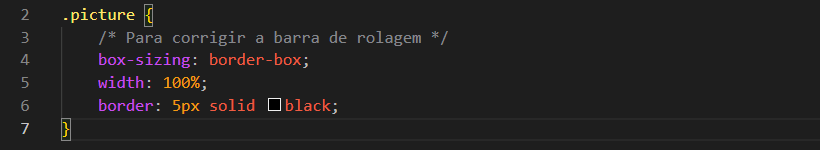
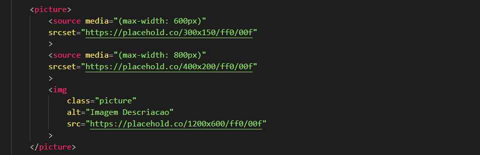

Responsive Images
Intro
Aqui iremos aprender sobre otimizacao e responsividade de imagens.
Aqui iremos aprender sobre otimizacao e responsividade de imagens.
HTML:

CSS:

Agora iremos fazer algumas configuracoes para entender como imagens podem se adaptar a diferentes tamanhos de tela.
Quando trabalhamos com responsividade, uma imagem muito grande pode funcionar bem em computadores, mas acabar sendo desnecessaria em dispositivos menores.
Por exemplo, uma imagem de 1200x600 pode ser adequada para desktop, mas em celulares o navegador ainda precisaria carregar essa imagem grande mesmo utilizando uma tela menor.
Para resolver isso, podemos utilizar imagens diferentes dependendo do tamanho da tela do dispositivo.
Podemos colocar nossa tag img dentro de uma tag picture.
Depois utilizamos a tag source para definir imagens diferentes de acordo com o tamanho da tela.
Exemplo source:

Cada imagem sera carregada dependendo das regras definidas no media.
O navegador verifica os sources de cima para baixo e utiliza o primeiro que for valido para aquele tamanho de tela.
A tag img funciona como imagem principal e tambem como fallback caso nenhum source seja aplicado.
Importante lembrar que nao precisamos adicionar uma class diretamente no source, pois o img principal ja pode ser estilizado normalmente.
Conteudo da aula